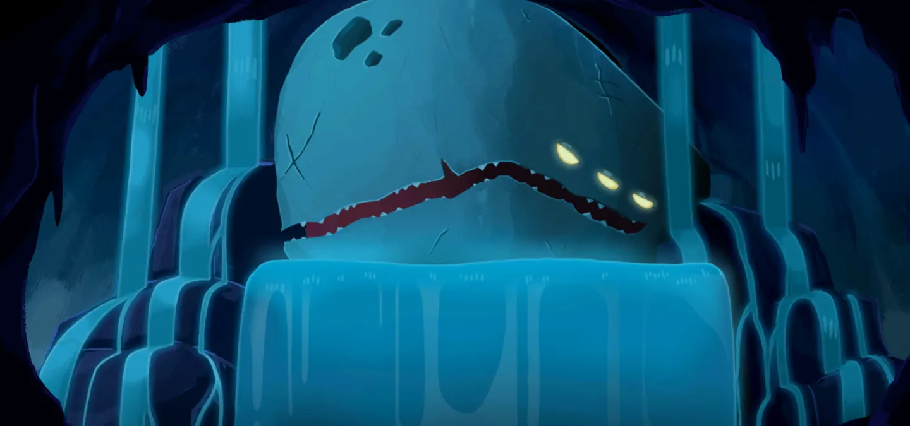

切換遊戲版本2026-06-18
所有先古之民



涅奧
復生之母（被放逐）
第 1 幕28 件遺物需先解鎖
造訪先古之民時會將生命值完全恢復（進階 2 以上只恢復已損失生命的 80%）。
涅奧位於第一幕的起始房間，需先揭示涅奧紀元才會出現。
有代價的遺物固定出現在第三個位置，另外兩件一定不收取任何代價。這 10 件遺物也只會在涅奧這裡出現。
若本局帶有修正（自訂遊戲），涅奧會改為提供與修正相關的內容。
涅奧最強遺物強度排行
涅奧可能提供的 25 件遺物，從必拿到陷阱一次看完。點選可跳到下方完整效果。
S
A
B
C
D
未分級
搶先體驗版的社群評級——版本平衡經常調整，僅供參考。
涅奧的全部遺物
每次造訪會從以下遺物池中抽出 3 件遺物。
無代價
從 20 件中提供 2 件奧術卷軸
獲得一張隨機稀有牌。
轟鳴海螺
在精英戰的戰鬥開始時，額外抽2張牌並獲得 。
。
。能量
能量用於打出你手牌中的卡牌。
釣魚竿
每3場普通戰鬥，隨機升級你牌組中的一張牌。
金色珍珠
拾起時，獲得150金幣。
萬花筒
獲得2次來自其他角色的卡牌獎勵。
鉛製鎮紙
從2張無色牌中選擇1張加入你的牌組。
失物盒
獲得1次卡牌獎勵和1瓶隨機藥水。
巨大卷軸
從3張多人遊戲牌中選擇1張加入你的牌組
涅奧的苦痛
將1張涅奧之怒加入你的牌組。
新葉
變化1張牌。
變化
卡牌被變化時會變成任意稀有度的隨機牌。
藥瓶皮套
獲得1個藥水欄位並獲得2瓶隨機藥水。
精準剪刀
從你的牌組中移除1張牌。
卷軸箱
從2個卡牌包中選擇1包加入你的牌組。
羽翼之靴
你在選擇下一層的房間時有3次機會可以無視當前的路線。
熔岩石
第一階段的Boss敵人額外掉落2件遺物。
有代價遺物不是「巨大扭蛋」時與「小型扭蛋」二選一
小型扭蛋
獲得一件隨機遺物。
有代價遺物不是「巨大扭蛋」時與「熔岩石」二選一
營養牡蠣
獲得11點最大生命值。
與「石爐加溼器」二選一
石爐加溼器
每當你在休息處休息時，將你的最大生命值提升5點。
與「營養牡蠣」二選一
涅奧的護符
升級你的1張打擊和1張防禦。
與「橙型香盒」二選一
橙型香盒
升級一張牌。
與「涅奧的護符」二選一
有代價
從 8 件中提供 1 件詛咒珍珠
獲得一張貪婪，獲得333金幣。
沉重石板
從3張稀有牌中選擇1張加入你的牌組。將1張受傷加入你的牌組。
巨大扭蛋
獲得2件隨機遺物。額外將一對打擊和防禦，加入你的牌組。
樹葉藥膏
變化你的1張打擊和1張防禦，然後失去12點最大生命。
變化
卡牌被變化時會變成任意稀有度的隨機牌。
涅奧骨骰
獲得2件隨機涅奧遺物。將1張隨機詛咒加入你的牌組。
鬆動羊毛剪
從你的牌組中移除2張牌，然後失去16點生命。
華美髮束
失去所有金幣。為第一次卡牌獎勵中的所有牌附魔：華彩。
華彩
這張牌每場戰鬥能夠重放一次。
重放
將這張牌額外打出1次。
白銀熔爐
你遇到的前3次卡牌獎勵將是被升級過的。你打開的第一個寶箱將是空的
強弱對應組合
每件有代價遺物都是某件無代價遺物的強化版。遊戲先抽有代價的那件，再把它較弱的版本從另外兩個位置移除——所以你不會同時看到兩者。
詛咒珍珠 — 獲得一張貪婪，獲得333金幣。
則不會提供
金色珍珠 — 拾起時，獲得150金幣。
沉重石板 — 從3張稀有牌中選擇1張加入你的牌組。將1張受傷加入你的牌組。
則不會提供
奧術卷軸 — 獲得一張隨機稀有牌。
樹葉藥膏 — 變化你的1張打擊和1張防禦，然後失去12點最大生命。
則不會提供
新葉 — 變化1張牌。
鬆動羊毛剪 — 從你的牌組中移除2張牌，然後失去16點生命。
則不會提供
精準剪刀 — 從你的牌組中移除1張牌。